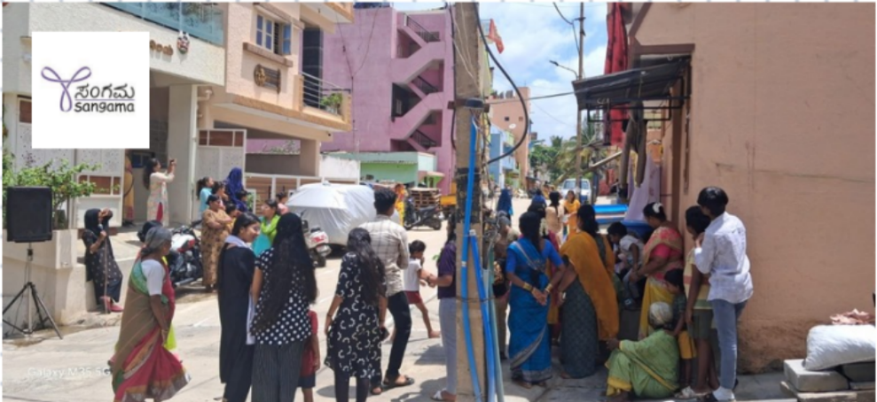

Community Engagement, Sports, and Insights from Leadership

A Day That Started with Lemon & Spoon - Building Community through Play
Our third and final day at Sangama Foundation's Rajgopalnagar Resource Center started on a lighter and refreshing note literally, with a community Sports Day organized by the team[cite: 46, 47]. As we entered the locality after a quick breakfast in Rajendranagar, we saw children and elders gathered around for fun, interactive games[cite: 47].
We were warmly invited to join the games one of the most popular being the Lemon and Spoon race[cite: 47]. To our surprise, even officials and resource staff participated[cite: 47]. The whole atmosphere was vibrant and inclusive, and the interaction served a deeper purpose breaking barriers between the community members and the field staff[cite: 47]. This approach by Sangama to use games as tools for relationship building felt both genuine and effective[cite: 47]. One of our teammates, Sourav, even won the game and made it to the final round![cite: 47]
A Candid Dialogue with Nirpum - Assistant Programme Manager
The second half of our visit became a meaningful and thought-provoking session as we finally got the opportunity to meet Mr. Nirpum, who serves as the Assistant Programme Manager at Sangama[cite: 47]. We had been waiting to meet him for two days, and the wait was worth it[cite: 47].
Sitting with us inside the resource center, Nirpum took us through the journey of Sangama Foundation, its origin, vision, and challenges[cite: 48]. Here are some highlights:
- Sangama began in 1999 as a resource initiative working with gender and sexual minorities[cite: 48].
- In 2001, it was officially registered as an NGO[cite: 48].
- Initially, the organization primarily worked with transgender communities, sexual minorities, and focused on gender identity and sexual orientation, where gender refers to what people feel about themselves, and sexuality is about preference and attraction[cite: 48].
Transition to Broader Social Justice Work
Nirpum also reflected on how Sangama's mission expanded over time, particularly post 2020 during the COVID-19 pandemic[cite: 48]. The team pivoted to community level support, helping with:
- Vaccination drives[cite: 48]
- Document creation[cite: 48]
- Entitlements[cite: 48]
- Support for migrant workers in urban settlements[cite: 48]
Now, the organization works across 10 out of 225 wards in Bangalore, reaching:
- 11,500+ households[cite: 48]
- 40,000+ people[cite: 48]
Technology Integration and Survey Strategy
We also learned how Sangama integrated technology into its fieldwork through the BUPSP software[cite: 48]. However, this was not easy[cite: 48]. It took about a year for many community organizers to become confident with the software[cite: 48, 49]. Over time, everyone adapted, and today they manage surveys, entitlements, and family-level tracking effectively[cite: 49].
Nirpum also highlighted a key difference in how access to the system is based on organizational roles:
- A Community Organizer (CO) can only access data of the families assigned to them[cite: 49].
- A MIS Coordinator can view all COs' progress under their supervision[cite: 49].
- A Head of Project has access to data across all locations and roles[cite: 49].
Urban Settlements and Survey Complexity
One striking insight was about the challenge of data management in dynamic urban slum settings[cite: 49]. Nirpum explained that, unlike organized slums, many families in the settlements move frequently[cite: 49]. This means that:
- When a CO revisits a house, it's often not the same family as before[cite: 49]. A new survey must begin from scratch[cite: 49].
This makes maintaining up to date and authentic data an ongoing challenge[cite: 49].
Organizational Communication & Documentation
Sangama practices strong internal communication[cite: 49]. They use:
- Organization based emails[cite: 49]
- Google Docs, Sheets, and Excel for tracking meetings, decisions, and action plans[cite: 49]
- Regular coordination between field teams and management to ensure sync between what's happening on ground and at leadership level[cite: 50]
Wrapping Up with Gratitude
After a lively and deeply insightful day, we sat together for some time, shared reflections, and thanked each member of the Sangama team[cite: 50]. The warmth they extended to us across all three days, from organizing interactive sessions to giving us open access to their systems, is something we will always carry with us[cite: 50].
Personal Reflection
The day made me realize how community engagement doesn't always begin with data or dashboards[cite: 50]. Sometimes, it begins with a spoon, a lemon, and a smile[cite: 50]. And when this warmth is combined with technology and inclusive leadership, the result is transformational grassroots work[cite: 50]. Sangama is not just a service provider; it's a catalyst for rights, dignity, and equity[cite: 50].
Note: All photos included in this post were taken with the informed consent of the community members and Community Organisers (COs)[cite: 50]. We deeply respect their dignity, stories, and trust, and thank them for allowing us to document their environment and experiences[cite: 50].